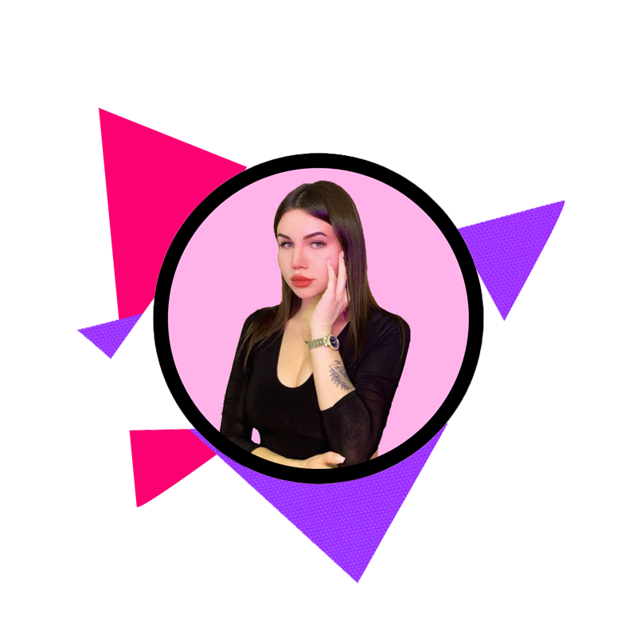

Elizaveta Razumenko
Contacts
Instagram: elizaveta__razumenko
Mail: razumenko99@mail.ru
Telegram: e_rzmnk
Number: +375(29)785-10-55
Skills
- JavaScript(in the process of studying)
- HTML(in the process of studying)
- CSS(in the process of studying)
Code
function showMessage() {
let message = 'Привет, ' + userName;
alert(message);
}
Projects
Education
- Belarusian National Technical University (specialty: civil engineer)
- Rolling Skopes school courses (ongoing)
English
I graduated from high school with a degree in English. When I entered the university, I had an English level of about B2. While studying at the university, my knowledge of English began to be gradually forgotten, since the practice of English was supported only in the narrow specifics of education, and then disappeared altogether.
At this stage, I am actively restoring the level of English proficiency, which has fallen to level A2. But I don't lose hope, because it's never too late to start over...
Summary
Since childhood, I have been attracted to the exact sciences. I was sure that I would definitely connect my life with a technical specialty. I can’t say for good or bad, but I grew up to be a talented child. When you have many hobbies and have the patience to achieve high results in your goals, it is very difficult to focus on one thing and choose the thing that I would like to do throughout my life.
I graduated from school with a gold medal, passed the Centralized Test without any problems and entered the Belarusian National Technical University for the specialty “Heat and Gas Supply, Ventilation and Air Protection” for a budget form of education. I chose the university on the recommendation of my parents and did not know at all what would await me in the future. By the way, studying was easy for me. I found many friends at the university, spent a very bright and fun student years, and after the fourth year I got a job in my specialty in a private design organization. For a year I worked and studied at the same time, wrote a diploma. I didn’t have time to think about whether I like what I do. There was still little experience in work, besides, it was time to look for a place where I would work for two years after graduation. I decided to continue working in my organization.
And now, after two years of working in an office in my specialty, I realized that this is absolutely not what I would like to do. I began to actively look for options that I would like, I asked my friend for advice. It was she who told me about the Rolling Skopes school courses. And I am here! Starting from scratch in my book of life.